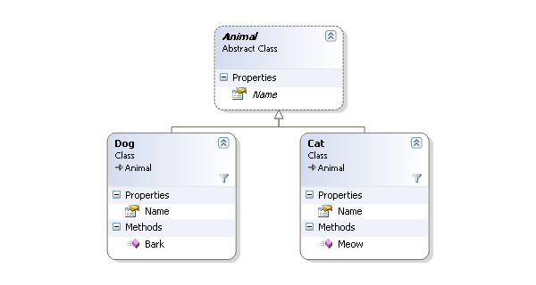
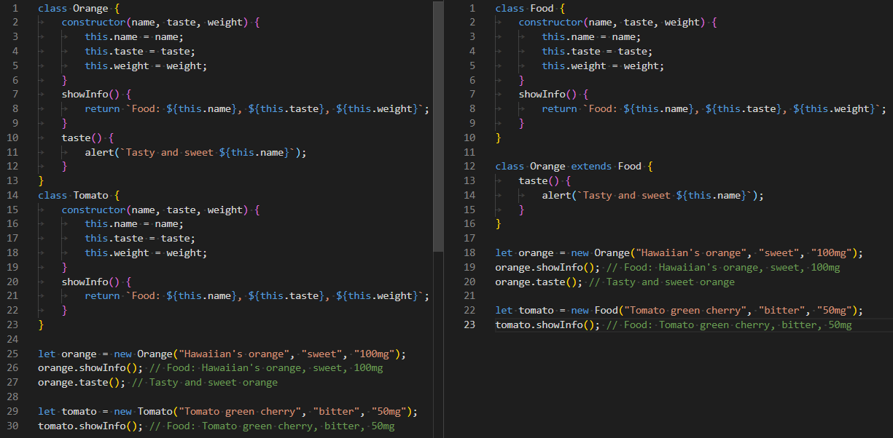

Inheritance in Javascript
Inheritance is...
a mechanism in which one class acquires the property of another class.
why and for what you need inheritance:
- allows you to extend properties of objects
- reuse the properties and methods of an existing object
- => allows you to do the above without duplicating code
Inheritance example
without inheritanse with inheritanse
an important nuance of inheritance:
if the parent object changes, then all inherited objects change. In the worst case, this can lead to broken code.
Inheritance
Classical

- classes inherit from classes
- and create subclass relationships: hierarchical class taxonomies
Prototypal


- A prototype is a working object instance
- Objects inherit directly from other objects
let's highlight two directions of js inheritance...
- Prototyping way
- Class inheritance as syntactic sugar(ES6)
Prototyping
All objects in JavaScript inherit from at least another object. The object that inherits from is called the prototype, and inherited properties can be found in the prototype object of the constructor.
let animal = {
eats: true
};
let dog = {
jumps: true
};
dog.__proto__ = animal;
The __proto__ property is a historically conditioned getter / setter for [[Prototype]].
// now we can find both properties in dog:
alert (dog.eats); // true
alert (dog.jumps); // true
=> "animal is the prototype of dog" or "dog is prototypical from animal"
let animal = {
eats: true,
walk() {
alert("Animal walk");
};
};
// walk is taken from prototype
dog.walk(); // Animal walk
Prototype chain:
let animal = {
eats: true,
walk () {
alert ("Animal walk");
}
};
let dog = {
jumps: true,
__proto__: animal
};
let cockerSpaniel = {
earLength: 15,
__proto__: dog
};
// walk is taken from the prototype chain
cockerSpaniel.walk (); // Animal walk
alert (cockerSpaniel.jumps); // true (from dog)
get/set
let animal = {
color: "brown",
kindPet: "cocker-spaniel",
set fullKindPet(value) {
[this.color, this.kindPet] = value.split(" ");
},
get fullKindPet() {
return `${this.color} ${this.kindPet}`;
}
};
let dog = {
__proto__: animal,
isAdmin: true
};
alert(dog.fullKindPet); // brown cocker-spaniel
// run set dog.fullKindPet = "black&white dalmatian";
alert(dog.color); // black&white
alert(dog.kindPet); // dalmatian
Important thing in inheritance with prototype chain
When trying to access any property of an object ->
- looked for in the object itself ->
- in the object's prototype ->
- in the prototype's prototype ->
- finish when found or last object = null
Performance
Long search times for properties located relatively high up the prototype chain can negatively impact performance.
hasOwnProperty is the only ability in JavaScript to work with properties without affecting the prototype chain.
Creating objects with the constructor
//first variant
function Person(name, age) {
this.name = name;
this.age = age;
}
function Employee(name, age, title) {
this.title = title;
Person.call(this, name, age);
this.__proto__.constructor = Person;
}
let employee = new Employee('Joe', 20, 'waiter');
console.log(employee);
//second variant
function Graph () {
this.vertexes = [];
this.edges = [];
}
Graph.prototype = {
addVertex: function (v) {
this.vertexes.push (v);
}
}
var g = new Graph ();
// the 'g' object has its own 'vertexes' and 'edges' properties.
// g. [[Prototype]] is set to Graph.prototype
//when new Graph () is executed.
Object.create()
The Object.create() method is another way to inherit
from a prototype when we create an object.
const person = {
name: 'Joe',
age: 20
}
let employee = Object.create(person);
employee.title = 'waiter';
console.log(employee);
Object.defineProperty()
We can also use this defineProperty() method to set the prototype of an object.
const person = {
name: 'Joe',
age: 20
}
let employee = {
title: 'waiter'
};
Object.defineProperty(employee, '__proto__', {
value: person
});
console.log(employee.__proto__);
Class inheritance with "extends"
With the release of ECMAScript 6, there is a whole bunch of keywords that implement classes.
The new keywords are "class", "constructor", "static", "extends", and "super".
class Person {
constructor(name, age) {
this.name = name;
this.age = age;
}
}
class Employee extends Person {
constructor(name, age, title) {
super(name, age);
this.title = title;
}
}
const employee = new Employee('Joe', 20, 'waiter');
Did before:
function Person(name, age) {
this.name = name;
this.age = age;
}
function Employee(name, age, title) {
this.title = title;
Person.call(this, name, age);
this.__proto__.constructor = Person;
}
let employee = new Employee('Joe', 20, 'waiter');
console.log(employee);
conclusions
- When writing JavaScript code that uses inheritance, be aware of the length of the prototype chains and try to keep them as short as possible to avoid performance issues at runtime.
- The only justification for extending basic prototypes can be polyfills - emulators of new functionality (for example, Array.forEach) for language implementations that do not support it in old web browsers.